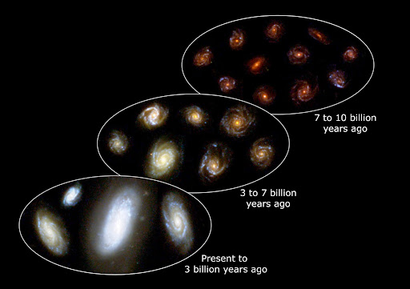

Galaxy Facts: Interesting Facts about Near and Distant Galaxies
A galaxy is a massive and gravitationally bound system which is comprised of stars (like the Sun), stellar remnants (compact stars), an interstellar medium of gas and dust, as well as the important, but misunderstood, dark matter - a matter hypothesized to account for gravitational effects that appear to be the result of invisible mass.
Galaxies can range in size from a dwarf with as few as ten million stars to massive giant galaxies with a hundred trillion stars. Each star orbits its galaxies own centre of mass and it is estimated that there are more than 170 billion galaxies in the observable universe. Lets dive in to explore many more galaxy facts!
Galaxy Facts and Information
There are about 170 billion galaxies in the observable universe. Each of these galaxies has different stories to tell when it comes to their origins. So how do galaxies form?
The universe is so big that light from distant galaxies takes millions or even billions of years to reach us. By the time it reaches us, what we actually see is what it looked like in the past. That is the reason why nearer galaxies look more developed than those farther from us. Figuratively, the further we look into space, the more we go back in time.

There was a time when we thought that the Milky Way was the only galaxy out there. It changed when the big and bright Andromeda was discovered. However, before it became known as a galaxy, it was previously called the “Great Andromeda Nebula.”
The very nature of these objects became the subject of the Great Debate between Harlow Shapley and Heber Curtis. Shapley believed that “spiral nebulae” like the “Andromeda Nebula” are within the bounds of the Milky Way. Curtis, however, stated that they are independent galaxie
Galaxies that do not classify as either elliptical or spiral are called irregular galaxies. They have an abundance of gas and dust which means a lot of young stars are being formed. Irregular galaxies do not have distinct shapes. The reason for this irregularity is often because of the gravitational influence of neighboring galaxies.
Galaxies that belong to the same groups and clusters mean that they are relatively close to each other. Because of that, their gravity can affect those that are near them and vice versa. Since dwarf galaxies have weaker gravitational pull than bigger galaxies, they are usually swallowed by the larger ones. Sometimes, a galaxy can resist the pull of another and a collision is avoided. However, the two can still have an effect on each other. The force of gravity between these two galaxies can still distort their shapes and appearance.
Even if collisions and mergers sound like a scary thing, the stars in a galaxy are spread apart. Astronomers say that there is a very low chance of stars smashing against each other when that happens.Instead, what is sure is that new stars will form as materials from two interacting galaxies combine. With that said, the Solar System will be safe when the Milky Way and Andromeda Galaxy finally collide in the far future.
Even if collisions and mergers sound like a scary thing, the stars in a galaxy are spread apart. Astronomers say that there is a very low chance of stars smashing against each other when that happens.Instead, what is sure is that new stars will form as materials from two interacting galaxies combine. With that said, the Solar System will be safe when the Milky Way and Andromeda Galaxy finally collide in the far future.
Black holes become dormant or inactive when no stars and other objects are near. The supermassive black hole of the Milky Way, located in Sagittarius A*, is thought to have been dormant for a long time. However, strong flares were detected from it in 2019 may indicate something more.
Black holes are very powerful fields that not even light can escape. Most of them are remnants of massive stars that have died. So, is there always a black hole in the middle of every galaxy?It is believed that almost every large galaxy has a black hole in the galactic center. Even the Milky Way has one. They are thought to be at the center of every galaxy because such powerful forces may be responsible for pulling the material that started the creation of galaxies.Black holes swallow everything close to them. With that, it consumed whatever was near. Those that were beyond its reach started to spin around it, forming a new galaxy.